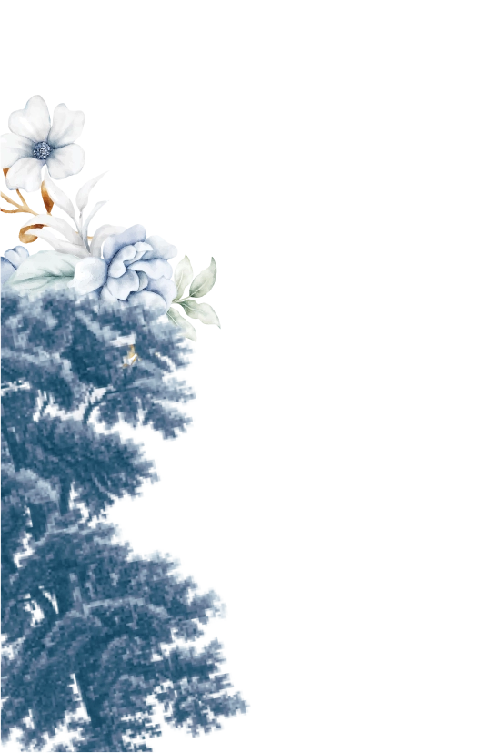
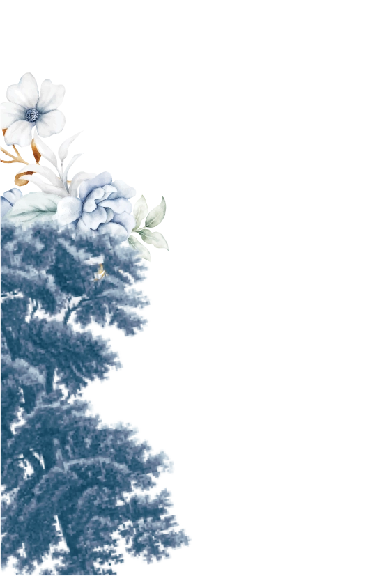
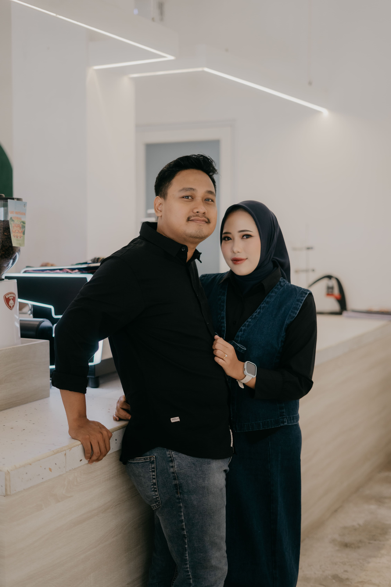
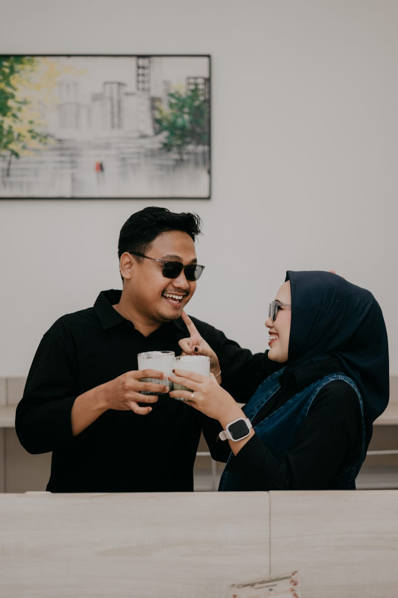
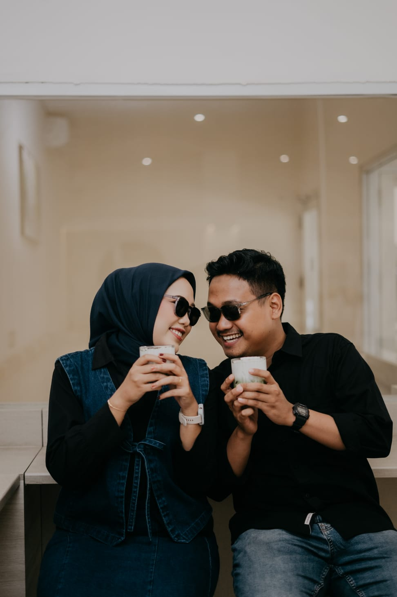
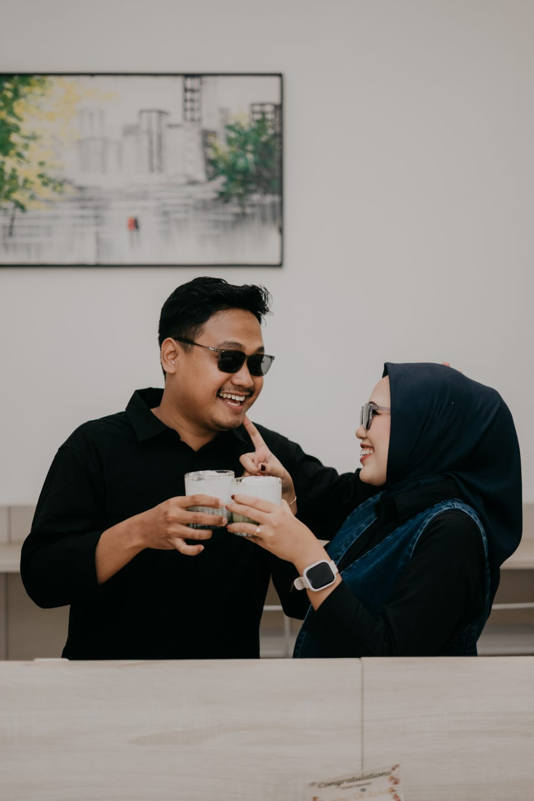
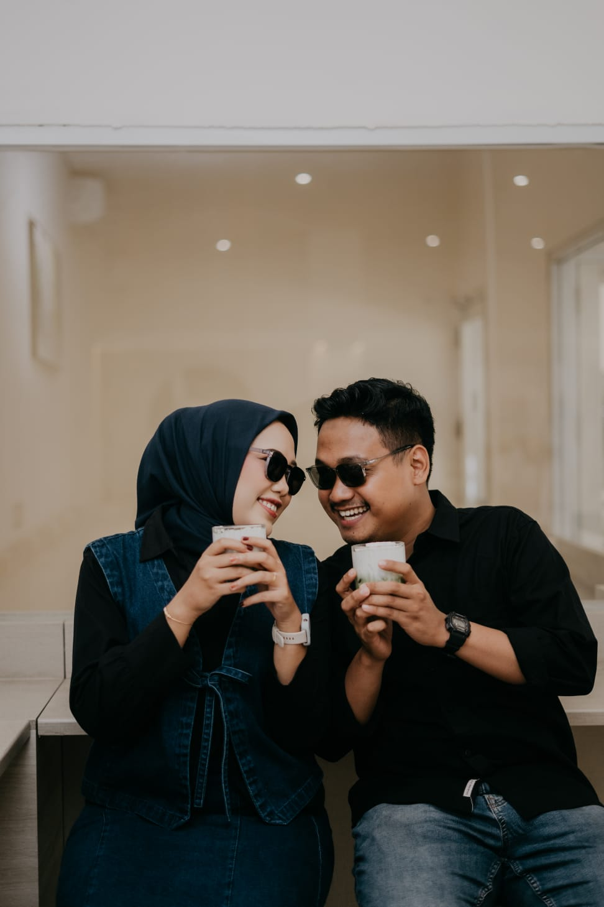
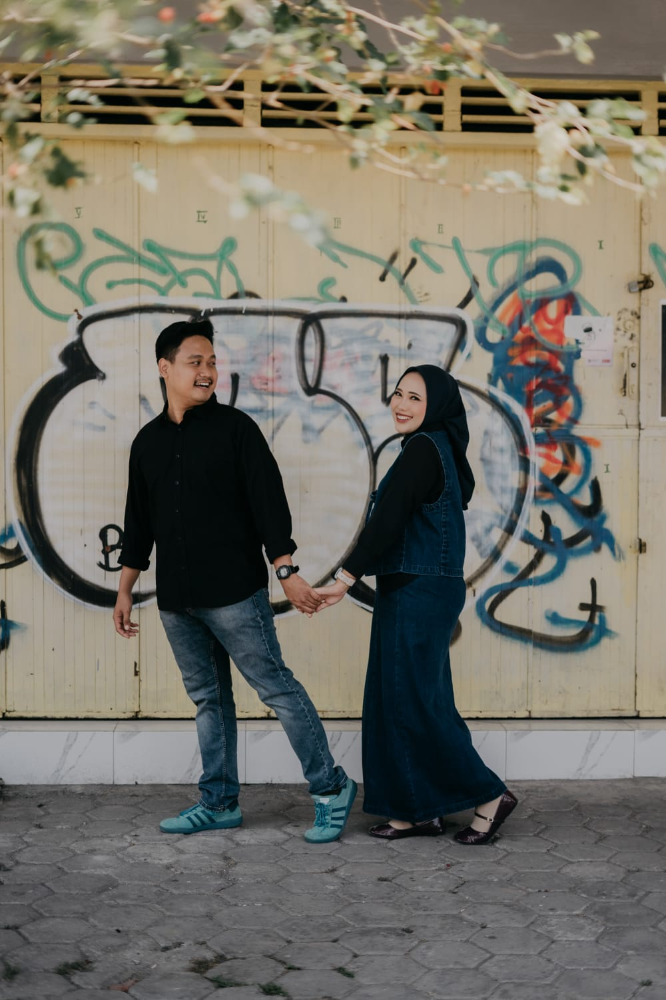
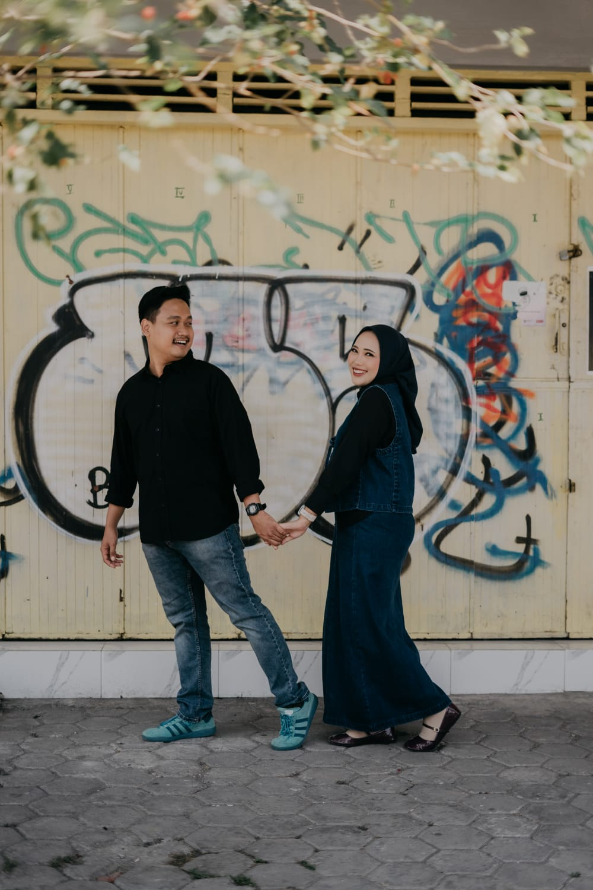

-
 The Wedding OfFajar&RestiKepada Yth;
The Wedding OfFajar&RestiKepada Yth;
Bapak/Ibu/Saudara/i -
✤ Undangan Resepsi ✤FRFajar&Resti
-
✤ Adz-Dzariyat : 49 ✤وَمِنْ كُلِّ شَيْءٍ خَلَقْنَا
زَوْجَيْنِ لَعَلَّكُمْ تَذَكَّرُوْنَMahasuci Allah yang menciptakan makhluk-
Nya berpasang-pasangan -
Fajar Aina Rizky, S.KomPutra pertama dari
Bapak Zaelani Ikhsan & Ibu Hesti SetyowatidenganNindiani Dwi Restiana A.Md. AkPutri kedua dari
Bapak Budiman & Ibu Siti Nurjanah -
✤ Akad Pernikahan ✤Pukul 09.00 WIB - SelesaiJumat28.11.25✤ Kediaman Wanita ✤Kampung Pulo
No. 41 RT 01/ RW09
Saditan - Brebes -
✤ Resepsi Pernikahan ✤Pukul 11.00 WIB - 14.00 WIBSabtu29.11.25✤ Tempat Resepsi ✤Gedung Islamic Center Brebes
-

 
 
 -
Gedung Islamic Center BrebesPs. Batang, Kec. Brebes, Kabupaten Brebes, Jawa TengahPetunjuk Ke Lokasi
-
Do'a Untuk Pengantin"Semoga Allah memberkahimu di waktu bahagia dan memberkahimu di waktu susah, dan mengumpulkan kalian berdua dalam kebaikan"
[HR. Abu Daud]Tekan tombol dibawah ini untuk mengirim ucapan dan konfirmasi kehadiran -
Tanda KasihTerima kasih telah menambah semangat kegembiraan pernikahan kami dengan kehadiran dan hadiah indah Anda.0536537922BNI : Fajar Aina Rizky1310506121BCA : Nindiani Dwi Restiana
-
Merupakan suatu kebahagiaan dan kehormatan bagi kami, apabila Bapak/Ibu/Saudara/i, berkenan hadir dan memberikan do'a restu kepada kedua mempelai.Wassalamu'alaikum Warahmatullahi WabarakatuhKeluargaBapak Zaelani Ikhsan
dan Ibu Hesti SetyowatiKeluargaBapak Budiman
dan Ibu Siti Nurjanah


Pemberitahuan
Browser yang kamu gunakan mungkin kurang kompatibel. Beberapa fungsi undangan ini mungkin tidak dapat berjalan dengan baik. Kami merekomendasikan Chrome. Klik tombol dibawah ini untuk mendownload.